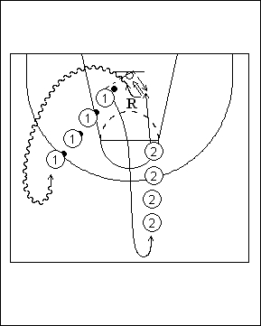

Catégorie : REBOND (Reb-06)
Déroulement
- Deux files de joueurs. Une file avec ballons sur un côté du panneau; l’autre file à hauteur de la ligne des lancers-francs.
- Le premier joueur de la file 1 lance le ballon contre la planche au-dessus de l’anneau; dès le lancer, le premier joueur de la file 2 démarre, effectue le rebond offensif suivi de la reprise en tip-in. Les joueurs suivants débutent alors l’exercice.
- Aussitôt après son lancer du ballon au-dessus de l’anneau, le premier joueur de la file 1 va dans la file 2. Après sa reprise en tip-in, le premier joueur de la file 2 réalise son rebond et va dans la file 1.
Coaching points
- Insister pour que les joueurs de la file 2 soient derrière la ligne des lancers-francs pour l’exécution correcte du drill et insister aussi pour qu’ils ne partent qu’au moment ou le ballon quitte les mains du joueur 1.
- On peut varier la fin du mouvement : tip-in direct; capter le ballon, retomber et remonter; idem + feintes; idem plus pas de dégagement; etc ...